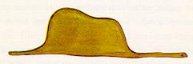
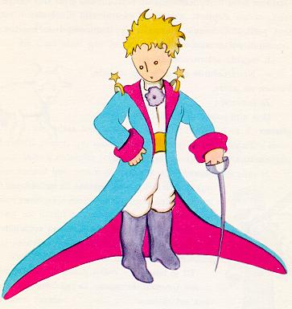
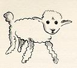
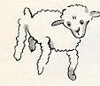

The Little Prince-sama
by Antoine de Saint-Exupery
Chapter 1
Once when was six years old I a magnificent picture a book , “True Stories from Nature” , about the primeval forest. A picture of a constrictor in the act of swallowing an animal . Here a copy of the drawing :

The book , it said: “ constrictors swallow their prey whole, without chewing it. After that they are not able to move, and they sleep through the six months that they need for digestion.”
pondered deeply over the adventures. And after some work with a colored pencil I succeeded in making my first drawing. Drawing Number . It looked like :
showed masterpiece the grown-ups , and, “Isn’t drawing scary?” ask tried.
But the answer : “? Why would a hat be ?”
My drawing a picture of a hat. a of a digest an elephant . But, the grown-up could understand, I made another , where the insides clearly. always need to have things explained. Number looked :

This time, , “Insides , , , put them away ,” . “Instead of , geography history arithmetic grammar study .” That is why, , at the age of , an artist magnificent career dream . not being recognized, disappoint . ones by themselves understand anything, children always and have to explain things to them. Tiring it becomes.
, career having to choose, airplane pilot learn. , I have flown almost the whole . Certainly, geography has been useful to me. At a glance, , China can distinguish. Night get lost , or whenever, it really helps to such knowledge.
course of my life , so-called “capable” person have met a great deal. together a lot lived, up-close come. But opinion , much change did not happen.
, always carry, this , at all clear-sighted I think person encounter , experiment try; because I wanted to know that is a who really things. , reply the same :
“Hat .”
aftermath , anymore stories , primeval forest , stars . things match: politics . Doing , , himself same hobbies good person meet feel, a pleasant to become reason ...
Chapter 2
, heartfelt possible without, alone went through life; until, now years ago, airplane emergency landing . Airplane , something broken . And, mechanic passengers ride , difficult repairs alone carry out could only , prepared for the worst. die question . Drinking , week's time .
The first night, habitation a thousand away sand top , sleep**** [nemuri] went. Ship sink, the high seas middle raft drift , more lonely . , daybreak , little strange voice awaken , how surprise event . Hear , voice...
“Please... a sheep draw!”
“?!”
“ !”
, thunder struck , jumped up. briskly my eyes rub. Carefully I try. , there , a extraordinary little boy , intently me stare, was it? , later among, the best I could child portrait . Although, , certainly, the sparkling lovely before my eyes image , tell complete .
fault . , it was because, since I by the an artist dream , besides, practice any .
Anyway, , child sudden appear event , my eyes completely popping out. , habitation away was. despite, boy , lost unlikely since, and tired since, to the point of death stomach empty , throat parch , afraid did not seem. To all appearances, middle lost child become indication . At last could open my mouth become , child ask:
“But... here what ?”
child , some weighty matter , quiet voice softly repeat only :
“... !”
Mysterious matter , too overpowering と, disobey does. , death danger expose , absurd think while , paper fountain pen . then, my focused study , geography history arithmetic grammar remembering, boy (a little crossly while), , tell. reply:
“ okay. ...”
or anything like that but; so myself only two among , one . That is, . , very surprised .
“No, no! swallow elephant things like want . very dangerous , and, elephant very cumbersome. place , small . I need a . .”
So then , :

carefully look at, ,
“No! , already sickness weaken. Different .”
:

, this worried about , grin , simply ,
“... normal , ram . Horns ...”
again redo:

But , earlier two , unusable .
“Too old . Long want .”
finally patience endure become. Quickly disassembly must . So, the next urgent , explain.

“This is a box. want , .”
how , my young judge face , suddenly bright .
“ , want ! , grass enough to ?”
“?”
“Because, place, ...”
“Okay , I'm sure. give , thing.”
, took a look:
“So ... Look! Sleep...”
And that was how Prince met.